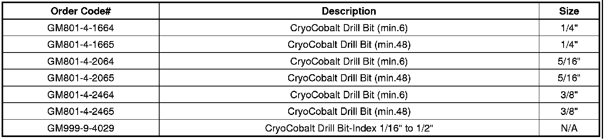

Body - Drilling High Strength Steel Using CryoCobalt(R)
INFORMATIONBulletin No.: 10-08-98-002
Date: August 06, 2010
Subject: Information on Drilling High Strength Steel Related to Collision Repair
Models:
2011 and Prior GM Passenger Cars and Light Duty Trucks
2010 and Prior HUMMER H2
2009 and Prior HUMMER H3
2010 and Prior Saturn Models
2009 and Prior Saab 9-7X
To improve safety, fuel economy and vehicle performance, a number of high strength steels are used in manufacturing General Motors vehicles. These various high strength steels and their location in specific vehicles can be found in Service Information | Body Repair | Collision Repair | Visual Identification.
To perform structural or collision damage repairs, it is often necessary to drill out (remove) resistance spot welds in order to separate the components being serviced from the vehicle structure.
A variety of drill bits are available to remove these resistance spot welds, however the useful life of many of these drills is limited by the hardness of the high strength steels.
The General Motors Collision Repair Technology Center has recently validated a *CryoCobalt(TM) drill bit that has been developed for use with very hard metals. These drill bits performed with exceptional results and should allow for increased production and reduced overall cost related to resistance spot weld removal. These drill bits can also be re-sharpened.
These drill bits are available directly from the manufacturer. Refer to the ordering information below.
*We believe this source and their products to be reliable. There may be additional manufacturers of such products/materials. General Motors does not endorse, indicate any preference for, or assume any responsibility for the products or material from this firm or for any such items that may be available from other sources.
Ordering Information
Use the part numbers listed below for special GM pricing.

Contact the drill bit manufacturer, Partsmaster.

Disclaimer